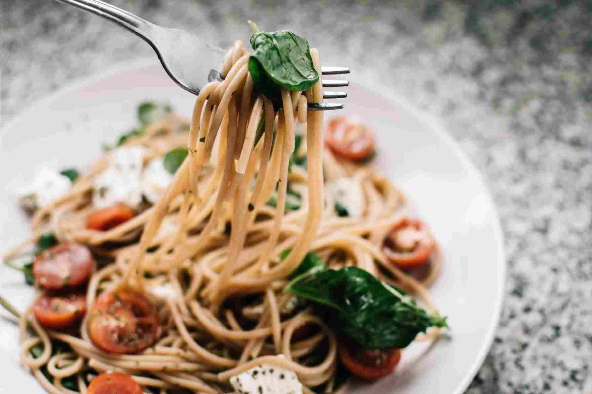

Tomato Basil Buratta Pasta

- Preparation Time: 10 min.
- Cooking Time: 15 min.
- Serves: 4
A succulent but healthy meal that brings on Mexican heat with the lightness of a flour tortilla. Easy to prepare for quick meals or mass produce when company knocks at your door.

Ingredients
- 680 g. plum tomatoes, quartered
- 3 cloves garlic, chopped
- 125 ml. olive oil
- 2 Tbs. red wine vinegar
- 2 tsp. olive oil
- 340 g. spaghetti
- 10 g. chopped basil
- 30 g. grated parmesan cheese
- 375 g. burrata cheese
Instructions
- In a large, nonreactive bowl, combine the tomatoes, garlic, olive oil, vinegar, ½ tsp. salt, and ¼ tsp. pepper. Let stand at room temperature, stirring occasionally, for 1 hour.
- Bring a large pot of generously salted water to a boil over high heat. Add the spaghetti and cook according to the package directions until al dente. Drain the pasta well and add, while still piping hot, to the bowl with the tomatoes.
- Stir in the basil and Parmesan. Taste and adjust the seasoning.
- Divide the pasta among bowls and top each serving with 60 to 90 g of the burrata.
- Drizzle the bowls with olive oil and serve immediately. Serves 4 to 6.